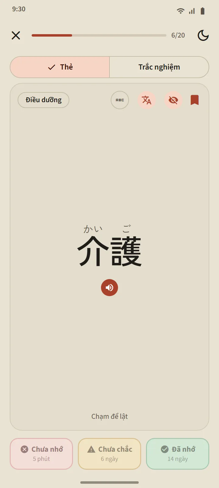
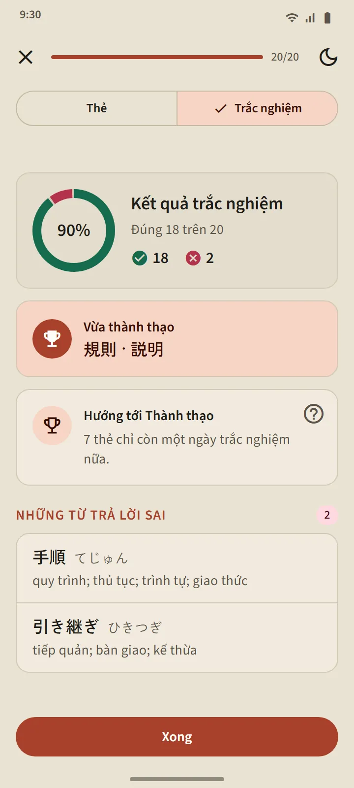
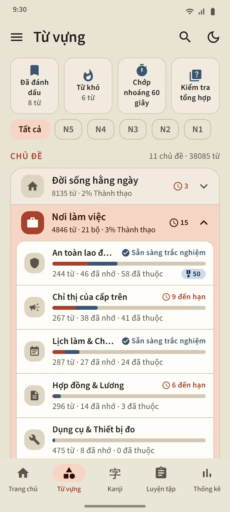
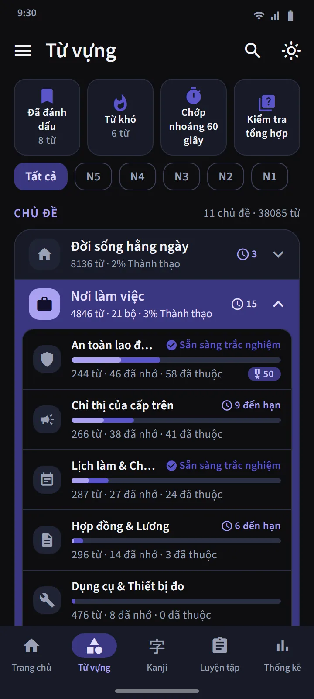

Thẻ biết khi nào bạn sắp quên
Mặt trước của thẻ hiện từ (kèm furigana nếu bạn muốn). Chạm để lật: cách đọc, romaji, nghĩa và các kanji thành phần, cùng một nút phát âm. Sau đó bạn tự đánh giá bằng một trong ba nút.
Việc lên lịch do FSRS đảm nhiệm, cũng là thuật toán lặp lại ngắt quãng mà các ứng dụng flashcard hiện đại sử dụng. Mỗi nút cho biết khi nào từ sẽ quay lại: vài phút, vài ngày hay vài tuần sau. Bạn càng thường xuyên trả lời Đã nhớ, khoảng cách càng dài.
- Chưa nhớ đưa từ về Đang học từ bất kỳ giai đoạn nào.
- Chưa chắc rút ngắn khoảng cách ôn của từ.
- Đã nhớ chuyển từ sang giai đoạn Đã nhớ và đẩy lần ôn tiếp theo xa hơn.


Bốn giai đoạn, và Thành thạo phải được chứng minh
Mỗi từ đi qua bốn giai đoạn: Mới, Đang học, Đã nhớ, Thành thạo. Nhấn Đã nhớ trên thẻ chỉ đưa từ đến giai đoạn Đã nhớ. Để đạt Thành thạo, bạn phải trả lời đúng từ đó trong trắc nghiệm vào ba ngày khác nhau. Những từ Thành thạo vẫn tiếp tục được kiểm tra khi đến hạn, và tụt hạng nếu bạn trả lời sai.
Trắc nghiệm của một bộ thẻ mở khi có 20 từ trong đó ở giai đoạn Đã nhớ hoặc Thành thạo (bộ nhỏ hơn mở ngay khi tất cả các từ đã được nhớ). Câu hỏi đi cả hai chiều: từ sang nghĩa, và nghĩa sang từ. Cuối bài, bạn thấy những từ vừa đạt Thành thạo, những từ chỉ còn cách một bước, và những từ bạn trả lời sai.


Học theo chủ đề, theo dõi từng từ
Tab Từ vựng được chia thành 11 nhóm, mỗi nhóm gồm các bộ thẻ nhỏ. Bộ lọc phía trên thu hẹp mọi thứ về một cấp độ JLPT. Mỗi bộ thẻ có màn hình riêng: vòng tròn phần trăm hoàn thành, danh sách từ kèm trạng thái của từng từ, bộ lọc Đang học/Đã nhớ/Thành thạo, và các nút Học và Trắc nghiệm.
Nhóm Nơi làm việc gồm 21 bộ thẻ dành cho những ai sang Nhật làm việc: An toàn lao động, Chỉ thị của cấp trên, Lịch làm & Chấm công, Hợp đồng & Lương, Dụng cụ & Thiết bị đo, Hậu cần & Kho bãi, Văn phòng & Giấy tờ, Chế biến thực phẩm, Điều dưỡng, Nhà máy & Sản xuất, Máy móc công nghiệp, Điện tử & Điện, Xây dựng, Nhà hàng & Bếp, Nông nghiệp, Đóng tàu, Vệ sinh tòa nhà, Ngư nghiệp, Ô tô & Sửa chữa, Hàng không & Sân bay, Khách sạn. Cho cuộc sống ở Nhật có các bộ thẻ về giao thông, mua sắm và tiền bạc, nhà cửa và đồ đạc, cùng các nhóm Xã hội & Hành chính và Cơ thể & Sức khỏe.
| Nhóm | Bộ thẻ |
|---|---|
| Đời sống hằng ngày | 16 |
| Nơi làm việc | 21 |
| Xã hội & Hành chính | 8 |
| Cơ thể & Sức khỏe | 8 |
| Tính cách & Cảm xúc | 8 |
| Từ loại | 5 |
| Công nghệ & Truyền thông | 4 |
| Thiên nhiên & Khoa học | 10 |
| Học thuật & Quan điểm | 8 |
| Văn hóa & Tôn giáo | 4 |
| Thể thao & Trò chơi | 3 |


Bộ thẻ đặc biệt và luyện nhanh
Phía trên danh sách nhóm có ba bộ thẻ lấy từ mọi bộ: Đã đánh dấu (những từ bạn gắn sao), Từ khó (tự đầy lên bằng những từ bạn hay quên khi học thẻ hoặc trả lời sai khi làm trắc nghiệm), và Chớp nhoáng 60 giây (nhiều thẻ nhất có thể trong một phút). Ô thứ tư, Kiểm tra tổng hợp, kiểm tra các từ Đã nhớ và Thành thạo từ tất cả các bộ thẻ cùng một lúc.

Từ điển bỏ túi 38.085 từ
Biểu tượng tìm kiếm trên thanh đầu màn hình tìm được mọi từ theo kanji, kana, romaji hoặc nghĩa. Kết quả được xếp theo độ khớp, và romaji được khớp có dung sai chính tả: shinbun và shimbun, koohii và kōhī, arigato và arigatou đều ra cùng một từ. Mỗi từ có một trang chi tiết: giai đoạn và lần ôn tiếp theo, nghĩa, các kanji thành phần kèm cách đọc, và một nút phát âm.


Cấp độ và ngôn ngữ của nghĩa
Cấp độ của từ chỉ là ước tính: Japan Foundation (Quỹ Giao lưu Quốc tế Nhật Bản) không công bố danh sách từ vựng chính thức, nên cách xếp cấp được xây dựng từ các danh sách JLPT cũ và tần suất sử dụng. Không có cấp độ từ “JFT” riêng: JFT-Basic kiểm tra cùng vốn từ cơ bản với N5 và N4, cộng thêm các từ về công việc.
Nghĩa của từ đầy đủ bằng 11 ngôn ngữ. Tiếng Khmer và tiếng Trung bao gồm mọi từ miễn phí; những từ chưa được dịch hiển thị bằng tiếng Anh. Ngôn ngữ bản dịch có thể chọn riêng với ngôn ngữ giao diện trong Cài đặt.
| Cấp độ | Số từ | Miễn phí |
|---|---|---|
| N5 | 1.030 | 1.007 |
| N4 | 2.044 | 1.503 |
| N3 | 11.230 | 4.097 |
| N2 | 11.309 | 2.290 |
| N1 | 12.472 | 503 |